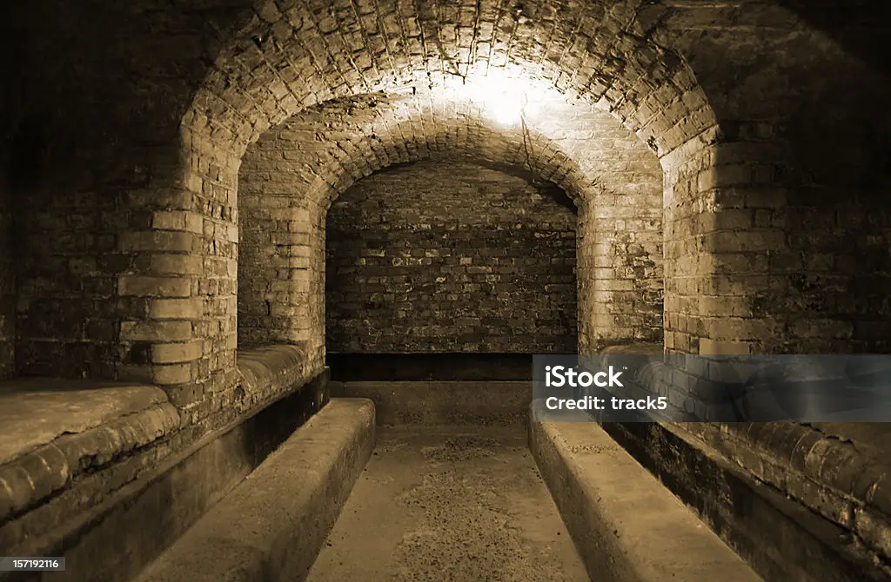

MEMENTO MORI
The Halls
You pass through the dark chamber, walking by cadavers and corpses. hands and legs strewn about and left to swing from their shelves as the coffins couldn't hold out against wear and tear of time.
Just like them, the time in the crypt wears at your body, as the odors from the bodies start to blur your vision as lights grow dimmer, and dimmer, and dimmer. Only the blur of the flickering lights and the engulfing shadows that absorb them
But your body moves on, past the smell, and past the blur. Only your desire to escape the beasts that had followed you earlier, and just as the thought had crossed your mind, barks echoed through the halls. The pitter patter of steps and the clanks of claws against the stone. You pace picks up as you run and meet the end of the hall ope to a staircase, diving deeper into the shadows of this place.
Run Down the Staircase
